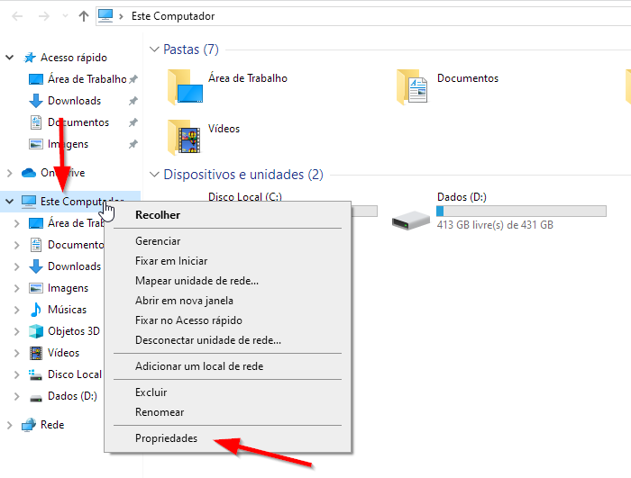
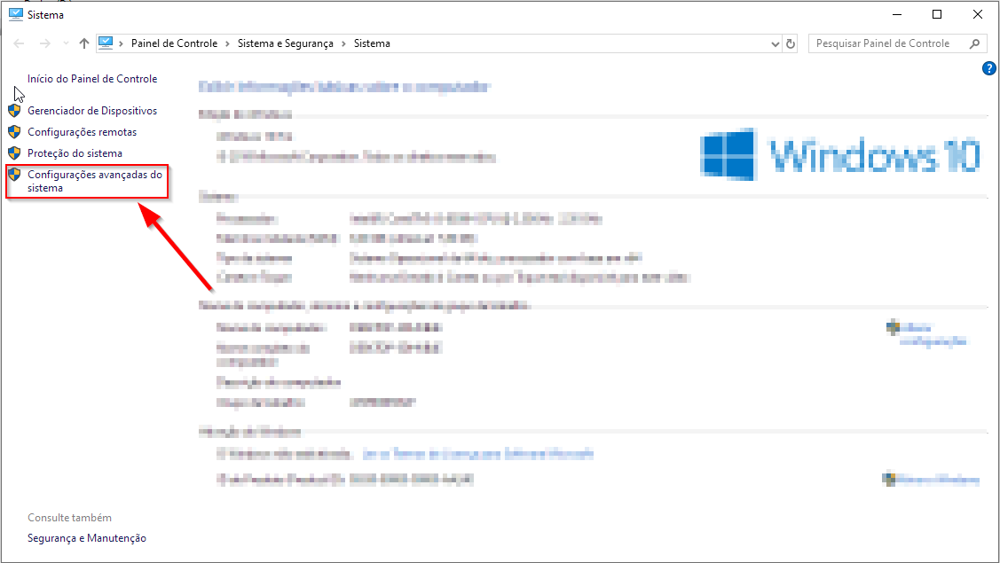
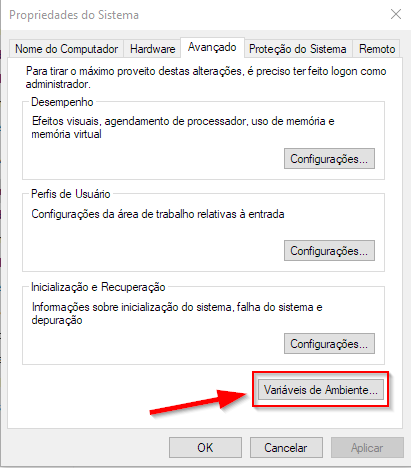
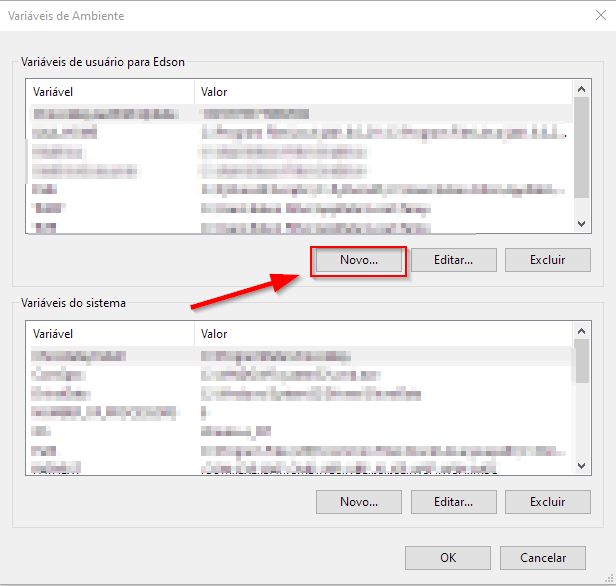
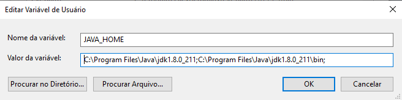
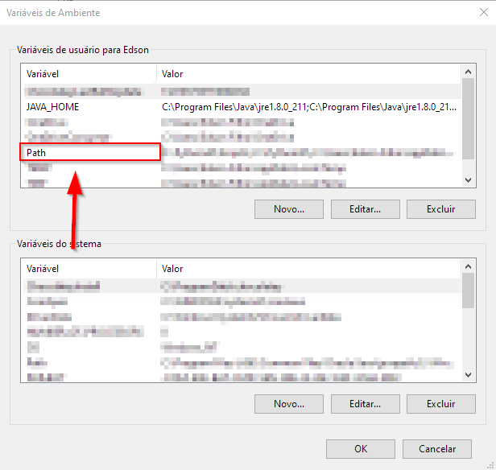
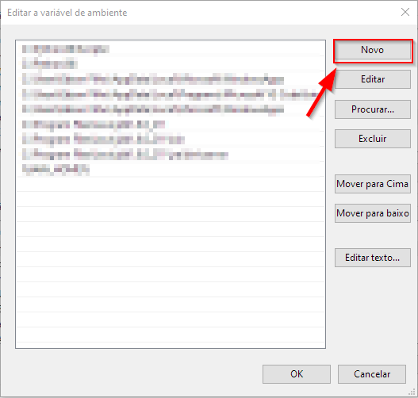
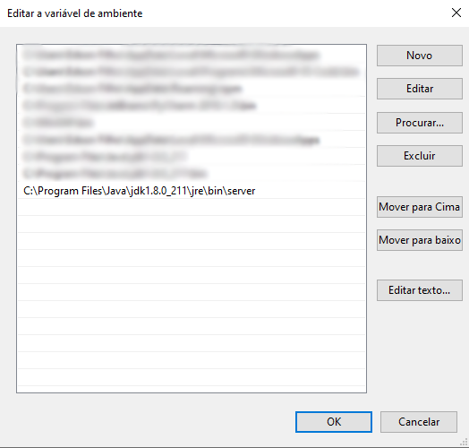

JAVA¶
Efetue o download do JAVA jdk no seguinte link
https://www.oracle.com/technetwork/pt/java/javase/downloads/jdk8-downloads-2133151.html
Configurando ambiente JAVA¶
Após efetuar o download e instalar o JAVA, você precisará fazer uma configuração de variáveis de ambiente para o funcionamento correto do vlibras.
Para fazer essa configuração você vai até o Meu Computador, após isso clicará com o botão direito em cima de Este Computador e depois em Propriedades, conforme ilustrado na figura abaixo.
Aparecerá uma tela igual a da imagem abaixo, nela você clicará em Configurações avançadas do sistema.
Em seguida clique em Variáveis de ambiente, conforme ilustrado na figura abaixo.
Na próxima etapa, você irá adicionar uma nova variável clicando em Novo.
Após clicar em Novo, aparecerá uma janela onde você poderá adicionar a variável e os valores dessa variável. Então no campo Nome da variável, você deve colocar JAVA_HOME e no campo Valor da variável você deve colocar 3 locais onde você instalou o JAVA, separados por ; seguindo os 2 passos abaixo.
Primeiro você colocará: “Local onde o JAVA foi instalado”. (Ex.: C:\Program Files\Java\jdk1.8.0_211)
Segundo você colocará: “Local onde o JAVA foi instalado”\bin. (Ex.: C:\Program Files\Java\jdk1.8.0_211\bin)
Após os 2 passos, clique em Ok. Segue uma imagem abaixo de exemplo de como deve ficar.
Nota
Por padrão o JAVA é instalado no seguinte local: C:\Program Files\Java\jdk1.8.0_211 ou C:\Program Files(x86)\Java\jdk1.8.0_211.
Após configurar a variável JAVA_HOME, precisará adicionar ela na variável PATH. Para isso clique duas vezes sobre PATH, como na imagem abaixo.
Após dois cliques sobre a variável PATH, aparecerá uma janela e nessa janela clique em Novo como na imagem abaixo.
Após clicar em Novo, adicione %JAVA_HOME% e outro local conforme a imagem abaixo e clique em Ok.
O local que será adicionado ao PATH: “Local onde o JAVA foi instalado”\jre\bin\server. (Ex.: C:\Program Files\Java\jre1.8.0_211\jre\bin\server)
Depois de seguir todos os passos acima, você pode clicar em Ok em todas as janelas que estão abertas para finalizar a configuração.